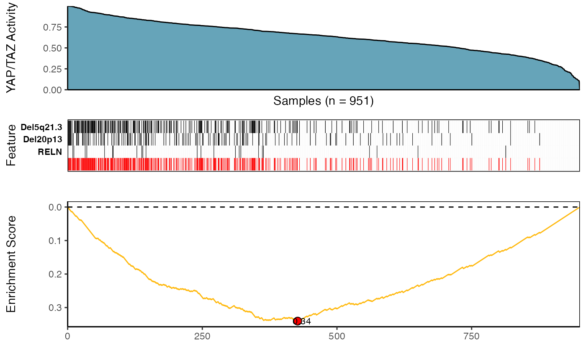

(1) Installation
- Using
devtoolspackage
library(devtools)
devtools::install_github("montilab/CaDrA")- Using
BiocManagerpackage
if (!require("BiocManager", quietly = TRUE))
install.packages("BiocManager")
BiocManager::install("CaDrA")(2) Quickstart
library(CaDrA)
library(SummarizedExperiment)(3) CaDrA Query of BRCA YAP/TAZ Activity
(i) Load & Format Data Inputs
## Read in BRCA GISTIC+Mutation object
data(BRCA_GISTIC_MUT_SIG)
eset_mut_scna <- BRCA_GISTIC_MUT_SIG
## Read in input score
data(TAZYAP_BRCA_ACTIVITY)
input_score <- TAZYAP_BRCA_ACTIVITY
## Samples to keep based on the overlap between the two inputs
overlap <- intersect(names(input_score), colnames(eset_mut_scna))
eset_mut_scna <- eset_mut_scna[,overlap]
input_score <- input_score[overlap]
## Binarize FS to only have 0's and 1's
assay(eset_mut_scna)[assay(eset_mut_scna) > 1] <- 1.0
## Pre-filter FS based on occurrence frequency
eset_mut_scna_flt <- CaDrA::prefilter_data(
FS = eset_mut_scna,
max_cutoff = 0.6, # max event frequency (60%)
min_cutoff = 0.03 # min event frequency (3%)
) (ii) Run CaDrA
Here, we repeat the candidate search starting from each of the top ‘N’ features and report the combined results as a heatmap (to summarize the number of times each feature is selected across repeated runs).
IMPORTANT NOTE: The legacy function topn_eval() is
equivalent to the new recommended candidate_search()
function
topn_res <- CaDrA::candidate_search(
FS = eset_mut_scna_flt,
input_score = input_score,
method = "ks_pval", # Use Kolmogorow-Smirnow scoring function
method_alternative = "less", # Use one-sided hypothesis testing
weights = NULL, # If weights is provided, perform a weighted-KS test
search_method = "both", # Apply both forward and backward search
top_N = 7, # Evaluate top 7 starting points for each search
max_size = 7, # Maximum size a meta-feature matrix can extend to
do_plot = FALSE, # Plot after finding the best features
best_score_only = FALSE # Return all results from the search
)(iii) Visualize Best Results
## Fetch the meta-feature set corresponding to its best scores over top N features searches
topn_best_meta <- CaDrA::topn_best(topn_res)
# Visualize the best results with the meta-feature plot
CaDrA::meta_plot(topn_best_list = topn_best_meta, input_score_label = "YAP/TAZ Activity")
(iv) Summarize Top N Results
# Evaluate results across top N features you started from
CaDrA::topn_plot(topn_res)